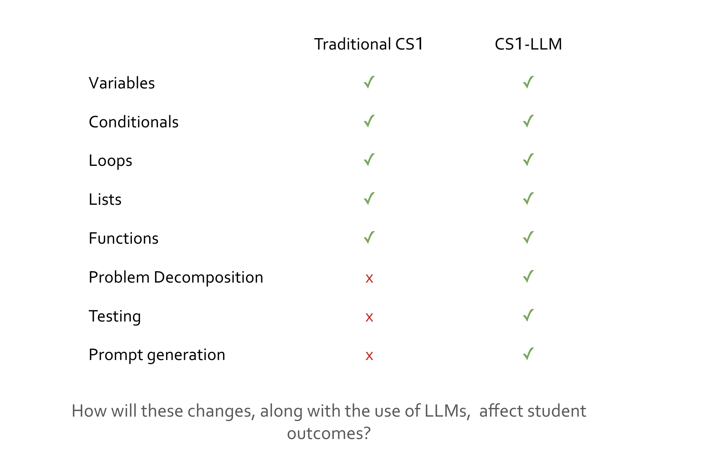

I am a current Ph.D. student in Cognitive Science at the UCSD Design Lab studying human-computer interaction (HCI). I am interested in how we can use HCI to both improve and understand the cognitive processes that learners use for solving problems that are new to them. I am advised by Prof. Steven Dow and Prof. Philip Guo.
Pedagogy, Scaffolding, and Outcomes in Introductory CS With LLMs

Large language models (LLMs) are being used increasingly in computer science in general, and classrooms in particular. Plugins such as Github Copilot leverage LLMs and provide code suggestions in real time, and it is unclear how this impacts students' learning of fundamental computing principles. Our objective is to compare student outcomes in an LLM-augmented introductory computer science class (CS1-LLM) as compared with a traditional introductory computer science class (CS1), specifically examining differential outcomes across demographic backgrounds. We are developing a novel introductory CS course led by Prof. Leo Porter, UCSD, and Prof. Dan Zingaro, University of Toronto. A key component of CS1-LLM is its instruction on the use of LLMs (specifically Github Copilot) to help write effective code, including guidance with the basics of prompt engineering.
We aim to answer the following questions:
RQ1: How do student outcomes in CS1-LLM compare with traditional CS1?
RQ2: How do the differences in outcomes across demographics in CS1-LLM compare to traditional CS1?
Explicit Principles and Explanations in Learning Novel Reasoning Tasks

How do people algorithmically tackle hard problems and develop generalizable principles from individual problem instances? When faced with a novel situation or task, many humans are able to formulate abstract principles that are useful to guide problem solving. The strength of this ability varies between individuals. Previous studies have investigated the role of self-explanation in understanding a novel task or phenomenon. One aspect of self-explanation that has been identified as a possible source of utility is the learner's generation of an explicit abstract principle that can then be applied to future situations or problems. I am interested in each of these factors (self explanation and reasoning experience) separately, as well as their interaction. Existing research on self-explanation has shown its importance, but the question of how exactly it helps in understanding remains open, with explicit abstract principle generation being one possible way that it contributes to understanding. My research questions are:
RQ1: When people learn to solve a novel task, do they formulate explicit principles during their learning of it?
RQ2: Does prior formal reasoning experience influence the ability to learn a novel task and the ability to formulate these explicit principles?
Lightweight Student-Driven Teaching Interventions in Tutor Training

In academia, a variety of people are required to teach students whether or not they have a background in teaching. Often, this results in subpar instructional results. While rigorous teaching programs exist for instructional careers, these are not required or often feasible for TAs and tutors. A more lightweight teaching intervention is therefore needed for training TAs and tutors. Many universities have created TA training courses, but there is not yet a standard for such courses and a concrete set of teaching principles that are expected to be mastered.
The need for such lightweight interventions closely mirrors a problem I encountered as an educator prior to my experience as a graduate student. As a co-founder of Transform Tutoring, a company that provides one-on-one tutoring for high school students, I led the interview process for STEM tutors. I developed a required pre-interview reading for candidates which included an explanation and example of student-driven teaching--that is, allowing students to find the next step of a problem on their own rather than providing it to them. My student-driven teaching and learning guide yielded much better interviews, and illustrated to me the promise of lightweight teaching interventions. As a graduate student, I adapted this guide to create an Introduction to Python TA Training which I have used to train several new TAs and tutors for our introductory programming course. As I continue to develop these trainings along with teaching professors in my department, we will aim to answer the following questions:
RQ1: There are many well-established teaching principles in pedagogical literature. Which ones are suited to lightweight teaching interventions that could be effectively taught to TAs and tutors without prior teaching training?
RQ1: Which teaching principles taught via lightweight teaching interventions are most effective for improving student understanding?
By answering these questions, we hope to develop trainings that are both feasible to teach TAs and tutors and effective for improving student learning outcomes.